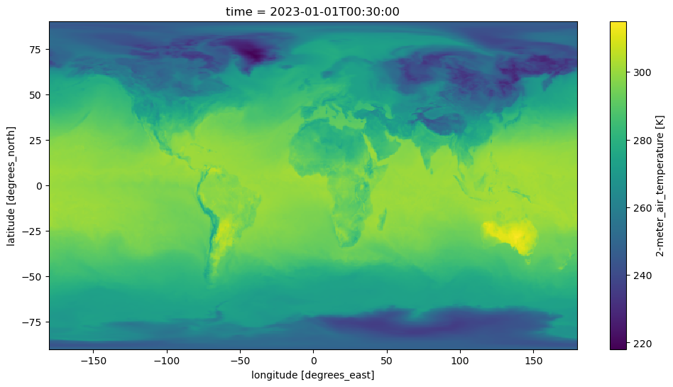
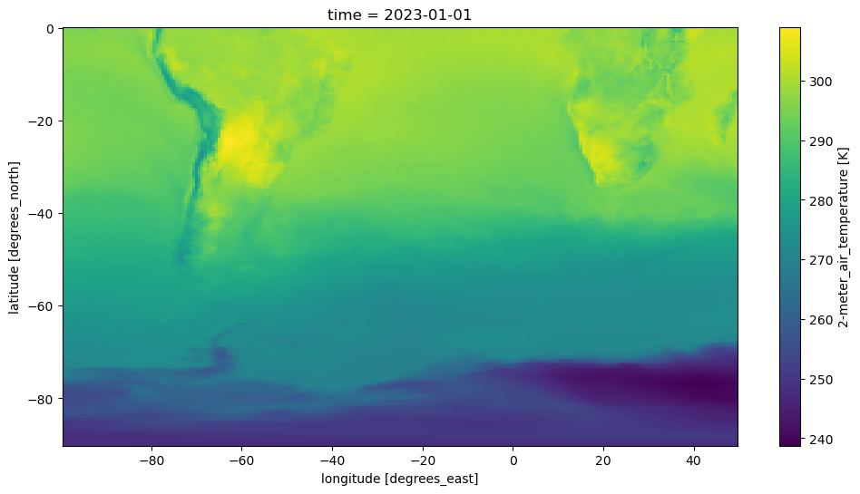

MERRA-2 Data via NASA’s OPeNDAP in the Cloud.#
Requirements to run this notebook
Have an Earth Data Login account
Preferred method of authentication.
Objectives
Use best practices from OPeNDAP, pydap, and xarray, to
Discover all OPeNDAP URLs associated with a MERRA-2 collection.
Authenticate via EDL (token based)
Explore MERRA-2 collection and filter variables
Consolidate Metadata at the collection level
Download/stream a subset of interest.
Author: Miguel Jimenez-Urias, ‘25
from pydap.net import create_session
from pydap.client import get_cmr_urls, consolidate_metadata, open_url
import xarray as xr
import datetime as dt
import earthaccess
import matplotlib.pyplot as plt
import numpy as np
import pydap
print("xarray version: ", xr.__version__)
print("pydap version: ", pydap.__version__)
xarray version: 2026.4.0
pydap version: 3.5.10.dev14+g40484efcb
Explore the MERRA-2 Collection#
merra2_doi = "10.5067/VJAFPLI1CSIV" # available e.g. GES DISC MERRA-2 documentation
# https://disc.gsfc.nasa.gov/datasets/M2T1NXSLV_5.12.4/summary?keywords=MERRA-2
# One month of data
time_range=[dt.datetime(2023, 1, 1), dt.datetime(2023, 2, 28)]
urls = get_cmr_urls(doi=merra2_doi,time_range=time_range, limit=100) # you can increase the limit of results
len(urls)
59
Authenticate#
To hide the abstraction, we will use earthaccess to authenticate, and create cache session to consolidate all metadata
auth = earthaccess.login(strategy="netrc", persist=True) # you will be promted to add your EDL credentials
# pass Token Authorization to a new Session.
cache_kwargs={'cache_name':'data/MERRA2'}
my_session = create_session(use_cache=True, session=auth.get_session(), cache_kwargs=cache_kwargs)
my_session.cache.clear()
Explore Variables in collection and filter down to keep only desirable ones#
We do this by specifying the NASA OPeNDAP server to process requests via the DAP4 protocol.
There are two ways to do this:
Use
pydapto inspect the metadata (all variables inside the files, and their description). You can run the following code to list all variable names.
from pydap.client import open_url
ds = open_url(url, protocol='dap4', session=my_session)
ds.tree() # this will display the entire tree directory
ds[Varname].attributes # will display all the information about Varname in the remote file.
Use OPeNDAP’s Data Request Form visible from the browser. You accomplish this by taking an OPeNDAP URL, adding the
.dmrextension, and paste that resulting URL into a browser.
Either way, you can inspect variable names, their description, without downloading any large arrays.
Below, we assume you know which variables you need.
variables = ['lon', 'lat', 'time', 'T2M', "U2M", "V2M"] # variables of interest
CE = "?dap4.ce="+ "/"+";/".join(variables) # Need to add this string as a query expression to the OPeNDAP URL
new_urls = [url.replace("https", "dap4") + CE for url in urls] #
Consolidate Metadata#
Aggregating multiple remote files at the collection level requires persistent internet connection. The pydap backend allows to download and store the metadata required by xarray locally as a sqlite3 database, and this database can be used as session manager (for futher downloads). Creating this databaset can be done once, and reused, version controlled, etc. Reusing this database can cut the time to generate the aggregated dataset view from minutes to seconds.
%%time
consolidate_metadata(new_urls, session=my_session, concat_dim='time')
datacube has dimensions ['lat[0:1:360]', 'lon[0:1:575]'] , and concat dim: `['time']`
CPU times: user 1.27 s, sys: 290 ms, total: 1.56 s
Wall time: 36.8 s
Explore an Individual Remote file#
We create an Xarray dataset for visualization purposes. Lets make a plot of near surface Temperature, at a single time unit.
Note
Each granule has 24 time units. Chunking in time as done below when generating the dataset, will ensure the slice is passed to the server. And so subsetting takes place close to the data.
%%time
ds = xr.open_dataset(
new_urls[0],
engine='pydap',
session=my_session,
)
ds
CPU times: user 74.4 ms, sys: 10.7 ms, total: 85.1 ms
Wall time: 93.9 ms
<xarray.Dataset> Size: 120MB
Dimensions: (time: 24, lat: 361, lon: 576)
Coordinates:
* time (time) datetime64[ns] 192B 2023-01-01T00:30:00 ... 2023-01-01T23...
* lat (lat) float64 3kB -90.0 -89.5 -89.0 -88.5 ... 88.5 89.0 89.5 90.0
* lon (lon) float64 5kB -180.0 -179.4 -178.8 -178.1 ... 178.1 178.8 179.4
Data variables:
T2M (time, lat, lon) float64 40MB ...
U2M (time, lat, lon) float64 40MB ...
V2M (time, lat, lon) float64 40MB ...
Attributes: (12/30)
History: Original file generated: Wed Jan 11 21...
Comment: GMAO filename: d5124_m2_jan10.tavg1_2d...
Filename: MERRA2_400.tavg1_2d_slv_Nx.20230101.nc4
Conventions: CF-1
Institution: NASA Global Modeling and Assimilation ...
References: http://gmao.gsfc.nasa.gov
... ...
Contact: http://gmao.gsfc.nasa.gov
identifier_product_doi: 10.5067/VJAFPLI1CSIV
RangeBeginningDate: 2023-01-01
RangeBeginningTime: 00:00:00.000000
RangeEndingDate: 2023-01-01
RangeEndingTime: 23:59:59.000000Visualize#
In Xarray, when visualizing data, data gets downloaded. By chunking in time when creating the dataset, we ensure in the moment of visualizing a single time-unit in xarray, the time slice is passed to the server. This has the effect of reducing the amount of data downloaded, and faster transfer.
fig, ax = plt.subplots(figsize=(12, 6))
ds['T2M'].isel(time=0).plot();

Subset the Aggregated Dataset, while resampling in time#
We select data relevant to the Southern Hemisphere, in the area near South America.
Store data in daily averages (as opposed to hourly data).
Note
To accomplish this, we need to identify the slice in index space, and chunk the dataset before streaming. Doing so will ensure spatial subsetting is done on the server side (OPeNDAP) close to the data, while Xarray performs the daily average.
Create Dataset Aggregation, Chunking in Space#
%%time
# spatial subset around South America
lat, lon = ds['lat'].data, ds['lon'].data
minLon, maxLon = -100, 50
iLon = np.where((lon>minLon)&(lon < maxLon))[0]
iLat= np.where(lat < 0)[0]
# Make sure subset is done by server
expected_download = {'lon':len(iLon), 'lat': len(iLat)}
ds = xr.open_mfdataset(
new_urls,
engine='pydap',
session=my_session,
concat_dim='time',
combine='nested',
parallel=True,
chunks=expected_download,
)
ds
CPU times: user 1.17 s, sys: 164 ms, total: 1.33 s
Wall time: 1.38 s
<xarray.Dataset> Size: 7GB
Dimensions: (time: 1416, lat: 361, lon: 576)
Coordinates:
* time (time) datetime64[ns] 11kB 2023-01-01T00:30:00 ... 2023-02-28T23...
* lat (lat) float64 3kB -90.0 -89.5 -89.0 -88.5 ... 88.5 89.0 89.5 90.0
* lon (lon) float64 5kB -180.0 -179.4 -178.8 -178.1 ... 178.1 178.8 179.4
Data variables:
T2M (time, lat, lon) float64 2GB dask.array<chunksize=(24, 181, 239), meta=np.ndarray>
U2M (time, lat, lon) float64 2GB dask.array<chunksize=(24, 181, 239), meta=np.ndarray>
V2M (time, lat, lon) float64 2GB dask.array<chunksize=(24, 181, 239), meta=np.ndarray>
Attributes: (12/30)
History: Original file generated: Wed Jan 11 21...
Comment: GMAO filename: d5124_m2_jan10.tavg1_2d...
Filename: MERRA2_400.tavg1_2d_slv_Nx.20230101.nc4
Conventions: CF-1
Institution: NASA Global Modeling and Assimilation ...
References: http://gmao.gsfc.nasa.gov
... ...
Contact: http://gmao.gsfc.nasa.gov
identifier_product_doi: 10.5067/VJAFPLI1CSIV
RangeBeginningDate: 2023-01-01
RangeBeginningTime: 00:00:00.000000
RangeEndingDate: 2023-01-01
RangeEndingTime: 23:59:59.000000Re-sample and subset#
All operations in the cell below are lazy, meaning are delayed and no computation is triggered.
## now subset the Xarray Dataset and rechunk so it is a single chunk
ds = ds.isel(lon=slice(iLon[0], iLon[-1]+1), lat=slice(iLat[0], iLat[-1]+1))
# take daily average and store locally
nds = ds.resample(time="1D").mean()
Download#
Storing the files will not oly trigger the download of the data, but it will also trigger any delayed computation above, such as resampling.
%%time
nds.to_netcdf("data/Merra2_subset.nc4", mode='w')
CPU times: user 37.5 s, sys: 12.5 s, total: 50 s
Wall time: 4min
Lets look at the data#
mds = xr.open_dataset("data/Merra2_subset.nc4")
mds
<xarray.Dataset> Size: 61MB
Dimensions: (time: 59, lat: 181, lon: 239)
Coordinates:
* time (time) datetime64[ns] 472B 2023-01-01 2023-01-02 ... 2023-02-28
* lat (lat) float64 1kB -90.0 -89.5 -89.0 -88.5 ... -1.0 -0.5 -1.798e-13
* lon (lon) float64 2kB -99.38 -98.75 -98.12 -97.5 ... 48.12 48.75 49.38
Data variables:
T2M (time, lat, lon) float64 20MB ...
U2M (time, lat, lon) float64 20MB ...
V2M (time, lat, lon) float64 20MB ...
Attributes: (12/30)
History: Original file generated: Wed Jan 11 21...
Comment: GMAO filename: d5124_m2_jan10.tavg1_2d...
Filename: MERRA2_400.tavg1_2d_slv_Nx.20230101.nc4
Conventions: CF-1
Institution: NASA Global Modeling and Assimilation ...
References: http://gmao.gsfc.nasa.gov
... ...
Contact: http://gmao.gsfc.nasa.gov
identifier_product_doi: 10.5067/VJAFPLI1CSIV
RangeBeginningDate: 2023-01-01
RangeBeginningTime: 00:00:00.000000
RangeEndingDate: 2023-01-01
RangeEndingTime: 23:59:59.000000fig, ax = plt.subplots(figsize=(12, 6))
mds['T2M'].isel(time=0).plot();
